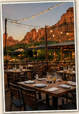

🍳 Breakfast
Coffee Pot Restaurant
Home of 101 Omelettes
Because apparently 100 wasn't enough.
🍳 View Menu
Sedona • Tuesday, August 4, 2026

Three days of driving have earned you this.
Sleep in. Eat an omelette the size of a hubcap. Explore Sedona at your own pace. Finish the day with one of the best dinners of the trip.
Vacation isn't always about doing more. Sometimes it's about finally slowing down.
One of Sedona's signature landmarks. Beautiful architecture. Even better views.
Doctor's orders. (We made that up.)

Coffee Pot Restaurant
Home of 101 Omelettes
Because apparently 100 wasn't enough.
🍳 View MenuThe Hudson
Tonight's reward. Great food. Great views.
You need a reservation... and you have one.
7:00 p.m.
🍽️ View Menu
A Tribute Portfolio Hotel
1200 W. Highway 89A
Sedona, AZ 86336
(928) 282-4200
You've spent three days trying to see everything.
Today... it's perfectly acceptable to see nothing.
The red rocks aren't going anywhere.
None.
Even the music gets a day off.
...we visit that giant hole in the ground.
I'll be there to help pick your jaws up off the deck the first time you step up to the South Rim.
Then we'll celebrate another successful orbit around the sun for Bill Vanko. 🎂

Congratulations. You've made it four days without a major incident.
Tonight we're eating somewhere classy.
If there are dinner rolls... look before touching.
We've already covered this once.
There will not be a second warning.